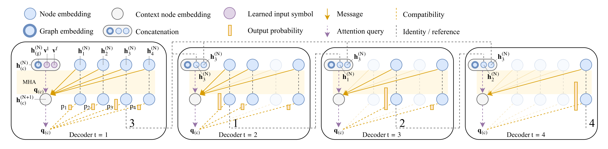
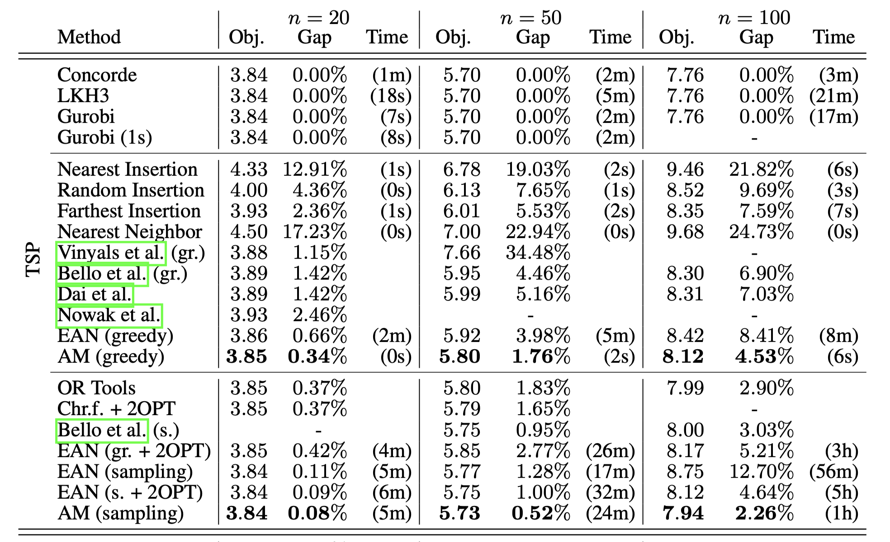
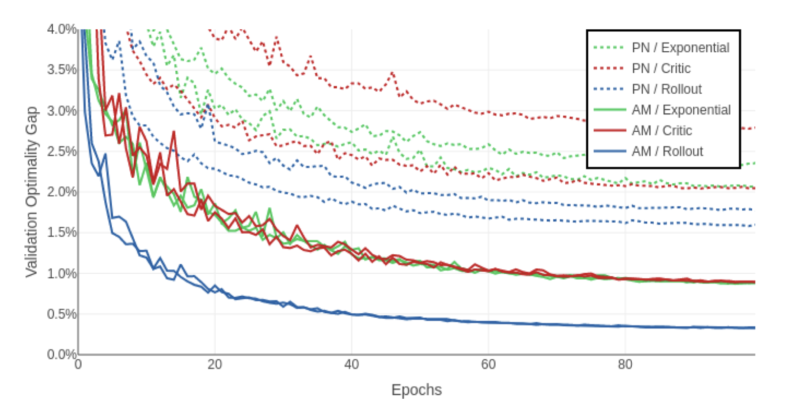

Paper Reading #2: AM
Last updated on September 5, 2025 pm
本文将精读论文 “Attention, learn to solve routing problems!”，作者 Kool et al.，时间 2019 年，链接 arXiv:1803.08475。
论文概述
这是一篇比较早的强化学习方向的工作，把注意力机制应用到 TSP 等 routing 问题的模型中。事实上，我们在 Paradigm 2: Autoregressive Transformer + RL 中就对其在 TSP 问题上的模型进行过简单的实现。
Title
首先注意到的是，文章的标题非常活泼有趣。“Attention”一语双关，表面上的意思是“注意！”，是一个引人注目的感叹词，但实际上又指文章基于注意力机制（Attention Mechanism）。整个标题采用祈使句，自信且有力，加上双关语的小笑话，能迅速抓住读者眼球。
Abstract
接着，我们阅读一下文章摘要：
The recently presented idea to learn heuristics for combinatorial optimization problems is promising as it can save costly development. However, to push this idea towards practical implementation, we need better models and better ways of training. We contribute in both directions: we propose a model based on attention layers with benefits over the Pointer Network and we show how to train this model using REINFORCE with a simple baseline based on a deterministic greedy rollout, which we find is more efficient than using a value function. We significantly improve over recent learned heuristics for the Travelling Salesman Problem (TSP), getting close to optimal results for problems up to 100 nodes. With the same hyperparameters, we learn strong heuristics for two variants of the Vehicle Routing Problem (VRP), the Orienteering Problem (OP) and (a stochastic variant of) the Prize Collecting TSP (PCTSP), outperforming a wide range of baselines and getting results close to highly optimized and specialized algorithms.
本文主要面向 TSP、CVRP、SDVRP、OP、PCTSP（SPCTSP）等 routing 问题，规模在 100 以内。在模型结构上，采用基于 Attention 的自回归模型；在训练方法上，采用带 Greedy Rollout 基线的 REINFORCE 算法。这种方法我们之前详细介绍过，其大致流程是：
- 模型构建：策略网络接收当前状态作为输入，根据解码出的概率分布，选择下一个要访问的节点，进而一个节点一个节点地构建出最终的路径。
- 训练过程：策略网络构建出一条完整路径后，计算路径总长度（以 TSP 为例），用总长度作为奖励信号，使用 REINFORCE 进行更新。
Introduction
文章 Introduction 部分的开篇仍然延续了标题的幽默风格：
Imagine yourself travelling to a scientific conference. The field is popular, and surely you do not want to miss out on anything. You have selected several posters you want to visit, and naturally you must return to the place where you are now: the coffee corner. In which order should you visit the posters, to minimize your time walking around? This is the Travelling Scientist Problem (TSP).
You realize that your problem is equivalent to the Travelling Salesman Problem (conveniently also TSP). This seems discouraging as you know the problem is (NP-)hard (Garey & Johnson, 1979). Fortunately, complexity theory analyzes the worst case, and your Bayesian view considers this unlikely. In particular, you have a strong prior: the posters will probably be laid out regularly. You want a special algorithm that solves not any, but this type of problem instance. You have some months left to prepare. As a machine learner, you wonder whether your algorithm can be learned?
文章以讲故事的方式切入，由一个学术会议的情景生动地引出了 TSP 问题，非常吸引论文的目标读者。接着由 TSP 问题的 NP-hard 特性，启发式地引出了使用机器学习的想法，即本文主题。
然后作者指出，之前解组合优化的启发式（heuristici）方法是基于规则的决策。这种策略应该能被神经网络参数化，而且用强化学习应该能学到比启发式更强的策略，让机器做出更好的决策。
Related Work
比较重要的工作是 2015 年 Vinyals et al. 的 Pointer Network 以及 2016 年的 Bello et al. 对 Pointer Network 的改进。Pointer Network 是一个基于 Attention 的模型，用于求解 TSP 问题，使用监督学习训练。Bello et al. 对其的改进主要是训练方式，采用了强化学习中的 Actor-Critic 方法。
模型及训练方法
Attention Model
以 TSP 为例，该模型我们在 Understading Transformer - An ML4CO perspective 中已经详细介绍过，在此从简。
AM 模型由一个 Encoder 和一个 Decoder 组成。Encoder 负责给出所有节点的 embedding 向量，Decoder 根据当前路径构建的情况，一个节点一个节点地选择边来构建完整的回路。
定义 TSP 问题实例 是一个有 个节点的图，节点编号 。一个解（即 tour） 是节点的一个全排列，即满足 且 。我们的 Encoder-Decoder 网络，参数为 ，选出某条特定路径 的概率 可以写为：
Encoder
Encoder 类似 Transformer，但不用位置编码（positional encoding），原因是节点特征与输入顺序无关。Encoder 由一个 Embedding 层和 N 个 Attention 层组成，每个 Attention 层由一个多头注意力（multi-head attention, MHA）层和一个前馈网络（feed-forward, FF）层组成。
输入的顶点特征（这里是顶点坐标），先经过 Embedding 层变为 维的顶点嵌入（node embedding），再经过 N 层注意力层的更新，得到最终的顶点嵌入和图嵌入。我们设输入 Attention 层的向量为 ，第 层输出的顶点嵌入向量为 ，其中 。

其中 Embedding 层是一个线性映射：
每个 Attention 层的更新规则是：
Decoder
Decoder 负责在每个时间步 下，根据 Encoder 和已选顶点 的信息，生成下一个选择的顶点 。具体来说，Decoder 要做的事是：
- Step 1: 根据当前状况生成一个 context embedding 向量 ；
- Step 2: 以 作为 query，和所有还未选择节点的 作为 key 进行匹配，通过多头交叉注意力 glimpse 一下所有候选节点情况，更新到 ；
- Step 3: 使用更新后的 作为 query，使用单头注意力计算各个未选择节点的注意力分数，生成下一步选择各个顶点的概率值。

其中 Context Embedding 作为每个时间步 中选择节点的 query，其构建方法至关重要。模型应当知道图的全局信息、起始节点信息、前一节点信息等，以便做出下一个节点的选择。在 AM 模型中，作者采用的构建方式是：
其中 表示 concatenation。、 是可学习的 placeholder 向量。
是 graph embedding 向量，表征了图的全局信息，其计算方式是最终所有 node embedding 向量的平均值，即：
接着，采用带掩码的多头交叉注意力对 做更新：
最终，使用单头注意力计算每个节点的选择概率值：
这边的介绍非常简略，仅仅展示了公式，具体可以看之前博客 Understading Transformer - An ML4CO perspective，里面有详细的解释及 Pytorch 代码实现。
REINFORCE with Greedy Rollout Baseline
有了 Attention Model，给定一个问题实例 ，模型就能输出一个概率分布 ，我们从中 sample 可以得到一个解 。那么如何训练这个模型呢？
文章中使用带 greedy rollout 基线的 REINFORCE 算法。其损失函数是 TSP 回路的总长度，策略梯度公式为：
该公式在 Paradigm 2: Autoregressive Transformer + RL 这篇博客中的“Model 搭建”部分有详细推导和分析。

这里重点讲一下 Baseline 的选取。好的 Baseline 减小梯度的方差，加快模型收敛。一种方法是使用指数移动平均（EMA）。先将 初始化为第一次得到路径的长度 ，然后每次用 更新。另一种方法是使用 Actor-Critic，即再用一个神经网络拟合价值函数，作者认为这有些搞复杂了。在本文中，作者采用了一个 greedy rollout baseline，即用当前效果最好的模型进行 Decoding，每次选择概率最大的节点，最终得到的 tour 的长度当作 baseline。
这样的策略类似于自我博弈，使得学习信号非常清晰，即“我这次的随机探索，有没有比我当前最理性的、最贪心的决策做得更好？”
- 如果探索的结果更好，说明这次的“灵光一闪”是有效的，模型会学习这个新思路。
- 如果探索的结果更差，说明这次是瞎走，模型会避免在未来犯同样的错误。
为了保证基线水平在稳步提升，作者对“当前效果最好的模型”的选取也很有想法。基线模型在一个训练 epoch 内不变，保证了基线的稳定；在一个 epoch 结束后，训练模型和基线模型在一个大小为 10000 的随机验证集上测试，只有训练模型的表现在统计上显著优于基线模型时（通过 t 检验，），我们才会更新基线模型到当前模型，这保证了基线水平的稳步提升。
然而，基线模型的使用带来了计算量的提升。考虑到基线模型的参数在每个 epoch 内不更新，且推理模式下占用内存更小，我们可以用更大的 batch size 提前计算好基线，以节省时间成本。
实验及结果
文章在 TSP、CVRP、SDVRP、OP、PCTSP（及 SPCTSP） 这几个 routing 问题上进行实验。这些问题的描述可以见 Common CO Problems in ML4CO 这篇博客。对于不同的问题，输入、掩码、解码器 context 和目标函数都需要修改，具体可以看原文 Appendix。实验所用的问题规模是 。
AM 配合了两种 Decoding 策略：
greedy：每一步选概率最高的节点。sampling：按概率 sample 得 1280 个解，选出最好的。
显然，sampling 会提高解的质量但增加计算量。
TSP

在 TSP-20、TSP-50 和 TSP-100（均为 uniform）上实验，选取的最优解求解器是 Concorde、LKH3 和 Gurobi。这几个求解器我们在 Traditional Solver Baselines in ML4CO 这篇博客中介绍过。其他 baseline 的选取如下：
- 赛道一：AM(greedy) 和一些只生成一个解的求解器对比。包括 Nearest Insertion 等 non-learned heuristics 和 Bello et al.(greedy) 等 learned heuristics。
- 赛道二：AM(sampling) 和一些生成多个解或含搜索的求解器对比。包括 OR Tools 和 Bello et al.(sampling) 等。
在赛道一上，AM 比其他所有求解器都更接近精确解。在赛道二上，这种优势减小但仍然是最好结果。
作者还在 TSP-20 上对比了 AM 与 PN 及不同基线选取方式对训练效果的影响。

可以看出，训练相同轮数后，AM 模型的整体表现明显好于 PN，并且 rollout 的 baseline 选取效果最好。
其他问题
AM 模型在 VRP、OP、PCTSP（SPCTSP）等问题上都发挥出色，表现出了在多种问题上的能力。事实上，对于图上各类能描述为序贯决策的问题，AM 模型应该都能应对。这相比于 problem-specific 的 human-designed heuristics，要方便很多。在其他问题上的表现见论文，在此省略。
总结
总的来说，这篇文章提出了一个新模型 + 一个新方法。新模型是一个基于 Attention 的模型，能够高效地处理图结构数据；新方法是基于自博弈的 REINFORCE 训练框架。这使得我们不再需要 human experts 为每一个问题变种去设计复杂的 rules，而是可以拥有一个通用的启发式学习机，自动学习出专属的、高效的求解策略。
PN 中使用的网络是 LSTM。AM 优于 LSTM 的原因如下：
- 顺序无关性：节点输入顺序不影响结果，而 LSTM 对顺序敏感。
- 并行计算能力：Attention 的计算可以高度并行化，这使得训练速度更快、效率更高。
- 更强的关系建模：多头注意力机制（MHA）本质上是一种在图节点之间传递信息的算法，这使得模型能够更好地理解节点在整个图结构中的关系，而不仅仅是作为一个序列中的元素。
- 规模扩展潜力：因为模型是基于图的，它在未来扩展到更大规模或稀疏图的问题上具有天然的优势，而这是传统序列模型难以企及的。
作者认为，future work 可能在：
- 扩大规模：如何将这种方法应用到更大规模的问题上。
- 复杂约束：现实中的复杂约束可能无法通过一个掩码处理。